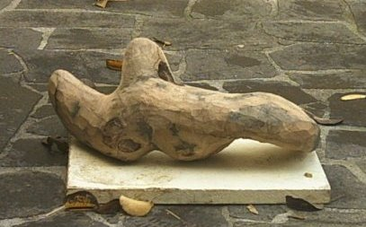

← Tutte le opereAll works
UR 079
AbbandonoAbbandono
legno di ulivo, 1999olive wood, 1999
- CatalogoCatalogue
- UR 079
- AnnoYear
- 1999
- TecnicaMedium
- legno di ulivoolive wood
- TipoType
- sculturasculpture
- DimensioniDimensions
- da completareto be completed
- CollocazioneLocation
- da completareto be completed
- VisteViews
- 2